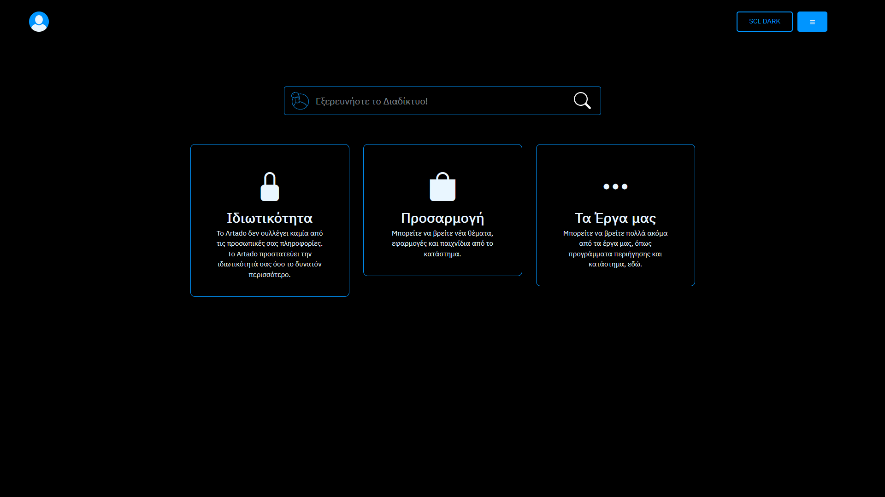
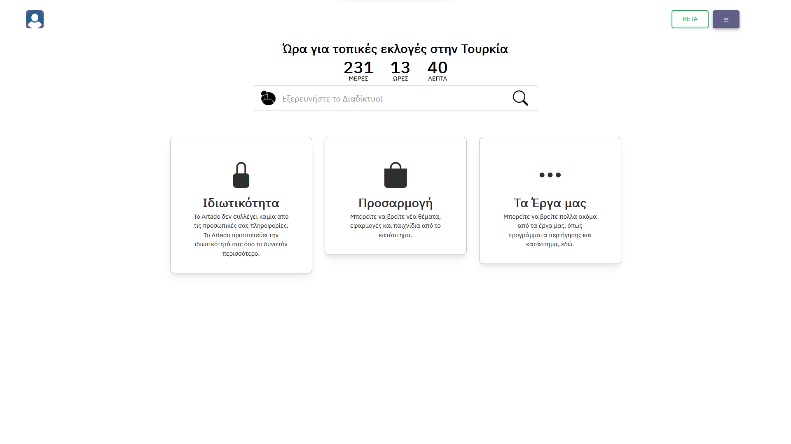
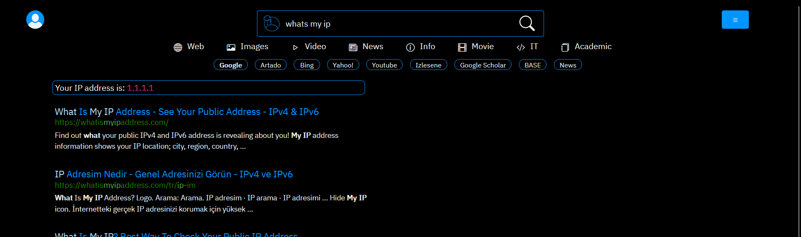
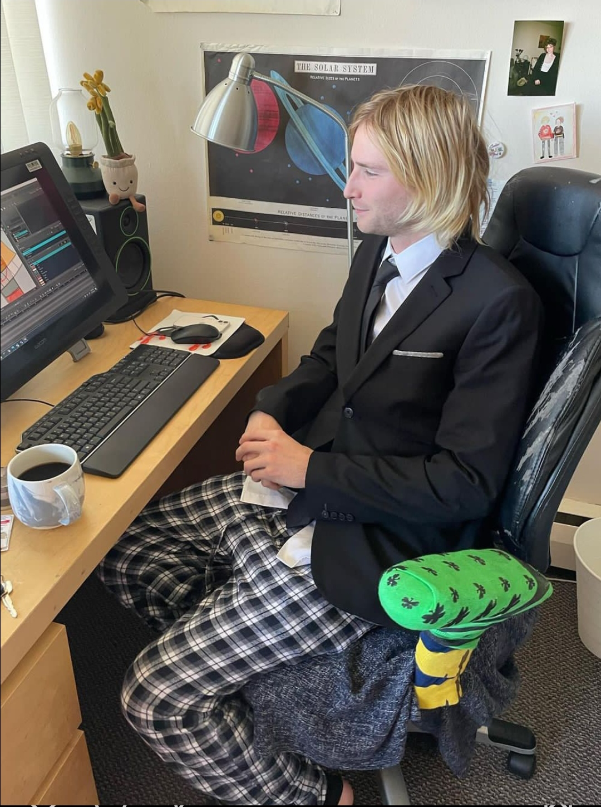

Çınar Yılmaz
Student
Competitive Programmer
Social
Certificates

C1 English Certification
Languages

Turkish
Native

English
C1 (Advanced)

Greek
A1 or pre-A1 (Beginner)
Skills
-
Cubing (Rubik's Cube)
I've been a speedcubing enthusiast since around March 2023. I can solve 3x3x3, 4x4x4 and Pyraminx. My personal best for 3x3x3 is
22.71s. -

Back-end Development
I'm experienced in building website backends and applications using Python.
-

Competitive Programming and Mathematics
I have multiple badges in various mathematics competitions
Year Competition Medal 2021 Istanbul Science Olimpiads (ISBO) Bronze 2022 TÜBİTAK National Science Olimpiads Bronze 2022 MSFL Mathematics Competition Honorable Mention 2022 Istanbul Science Olimpiads (ISBO) Silver 2023 TÜBİTAK National Science Olimpiads Silver
Education

Pendik Fatih Anatolian High School (PFAL).
I'm still studying here and I'll graduate in 2027. I got in this school with a LGS score of 455.19 (out of 500) and the minimum score of 2023 to get in this school was 451.47. A 455.19 score equals a percentile rank of %5,60 and it is known that there were 1,030,195 test-takers in LGS in 2023, so my rank is about 57,690.
My Works

Artado Project
It's not my own project, but I work in the Artado Project team and I've been contributing to Artado Project since June 2022. The project's trying to create an privacy-respecting ecosystem and I really recommend using its projects, especially Artado Search.
View Project
Camroku
It's a big project I used to work on, nowadays it's a dead project. It included some very complex projects like an operating system (Toryus), a programming language (QoLang), a blog script written in my own language (Camlog, my favorite web project so far), and a chatting web app (Selups).
View Project
Toryus
An operating system written in C for mainly educative purposes. I stopped working on it after things got too hard for me. It's based on Arus, an Artado project that's made by me, and Arus is based on Ember, which is a long-gone Camroku project.


QoLang
An experimental programming language written in Python. It includes a nice syntax, some built-in libraries, ability to write your own libraries using QoLang or Python, and you could built CGI web apps with some tricks too. I haven't been working on this project for a quite long time, but it's not officially dead.
View ProjectCamlog
A medium-like blog script written in QoLang. It features a user system (you can allow/disallow for external users to create accounts using the config), and writing texts in its own markup language called QoMar. It uses SQLite for database, and uses Bootstrap for front-end. I haven't been working on this project for a long time, too.
View ProjectSelups
A discontinued chatting web app, written by me and my friend Akif. It uses MongoDB for database and socket.io for server-client communication.
View Projectlivetex
A live editor for LaTeX, written in Javascript. Mainly made for my own usage, and may not be for an average end-user
View ProjectModifications
I LOVE modifying and theming stuff, especially websites. I've made some modifications for some websites, and I'm still doing it. Here are some of my works:
SCL Dark Theme for Artado Search
A dark theme for Artado Search, a search engine made by Artado Project. It's also the first complete theme built for Artado Search.
View Theme in Artado Workshop (WID:54)

Secim Countdown for Artado Search
A countdown for the local elections of Turkey in 2024. It's going to be updated as the elections happen in Turkey.
View Extension in Artado Workshop (WID:55)

What Is My IP for Artado Search
A "What is my IP" widget for searches like "whats my ip".
View Extension in Artado Workshop (WID:65)

Technopat Sosyal Araçlar / TPS Utils
An utility userscript for the Turkish forum Technopat Sosyal. It features many things for cleaning the view and improving the user experience.
View Userscript in Greasy Fork
Music
Here's my Spotify profile for a more detailed view.
The Jins
Damn, I LOVE THE JINS 😍.
Here's my favorite song by The Jins:
Metal and rock bands
I listen to a lot of songs by very varying bands, and I virtually know nothing about the sub-genres, but here's my favorite metal and rock songs anyway: